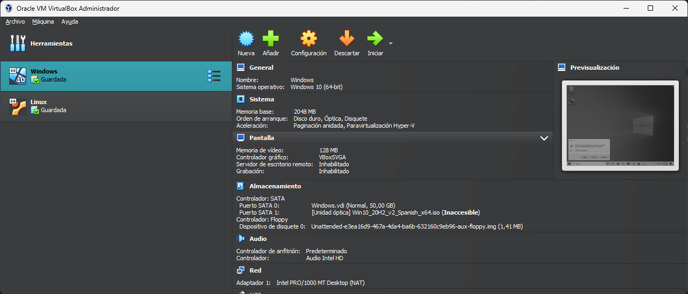
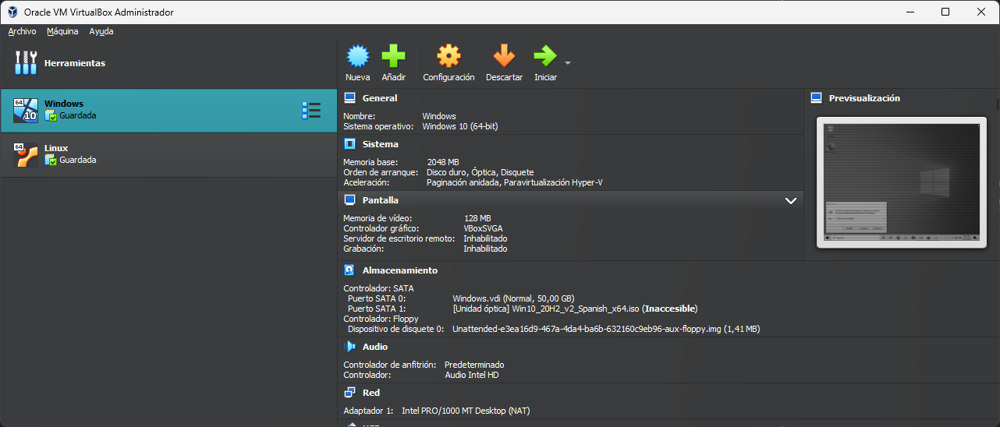
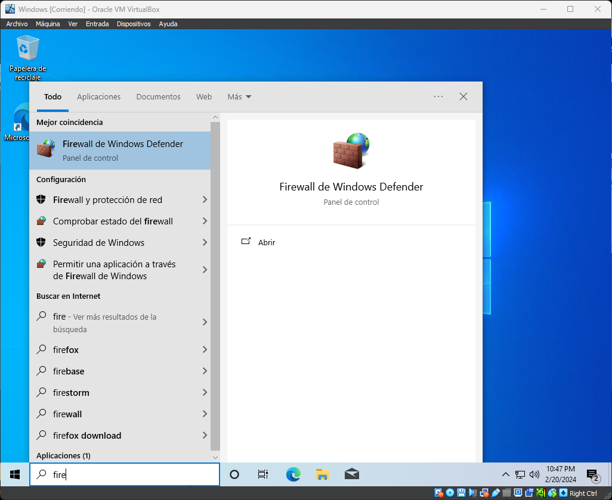
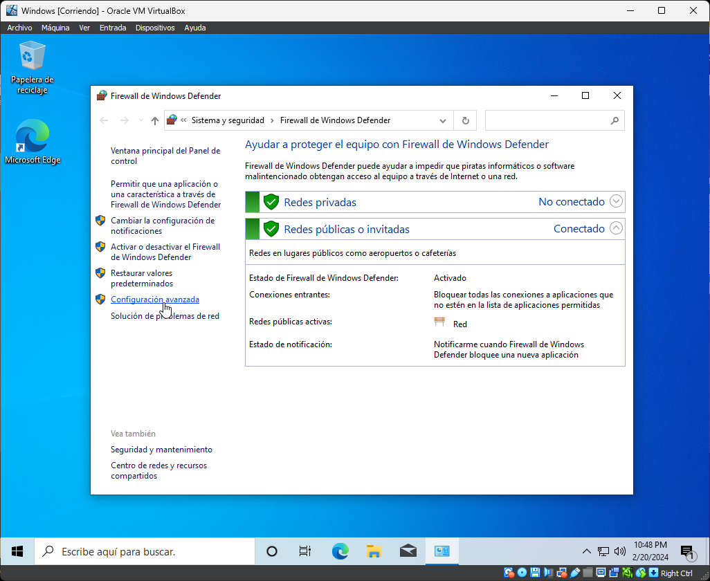
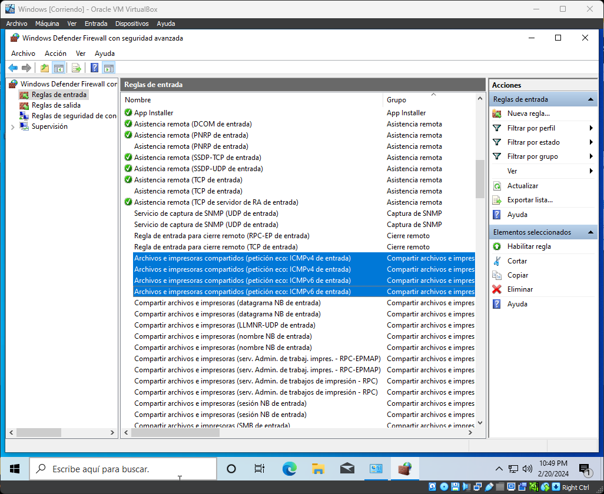

Arranque de la Maquina Virtual de Windows
Abriremos Virtual Box y arracaremos la maquina virtual de Windows anteriormente creada, dandole doble clic.
Abriremos Virtual Box y arracaremos la maquina virtual de Windows anteriormente creada, dandole doble clic.
Una vez que se abra el sistema operativo de windows. Pulsaremos la tecla windows de nuestro teclaro y buscaremos firewall, selecionaremos el primer resultado de la busqueda.
Una vez que se haya abierto la ventana de firewall, en la navegacion lateral encontraremos la configuracion avanzada, clicamos en la opcion.
En la barra lateral encontraremos una opcion llamada reglas de entrada, clicaremos sobre ella. Nos aparecera un listado Tendremos que habilitar todas las opciones en la que aparezca Archivos e impresoras compartidos.Luego tendremos que hacer lo mismo pero con las reglas de salida.
